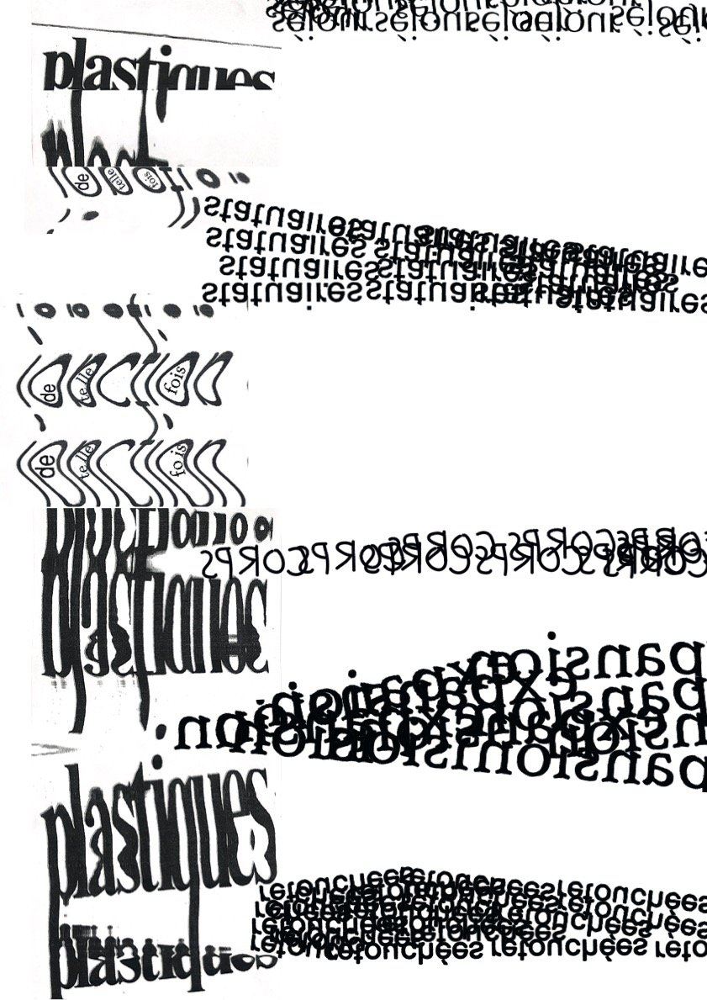
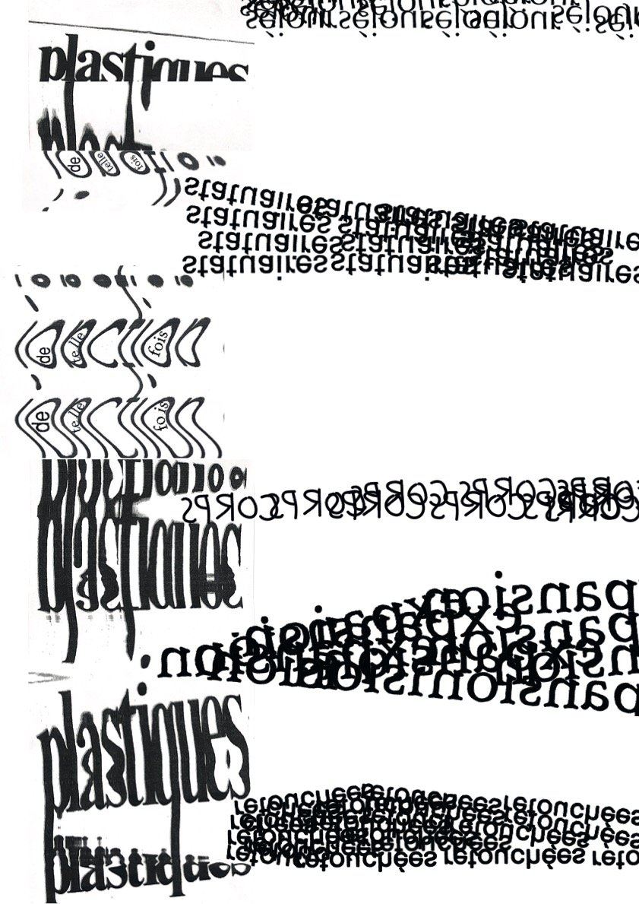
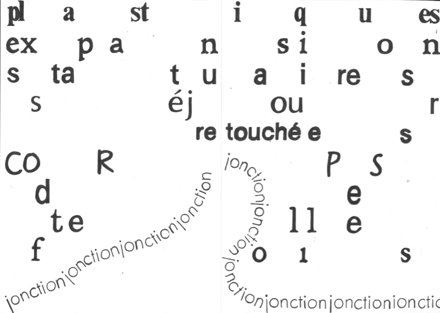
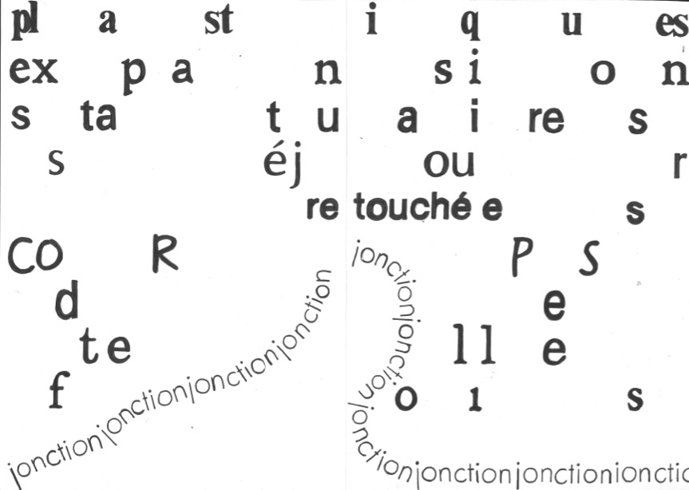
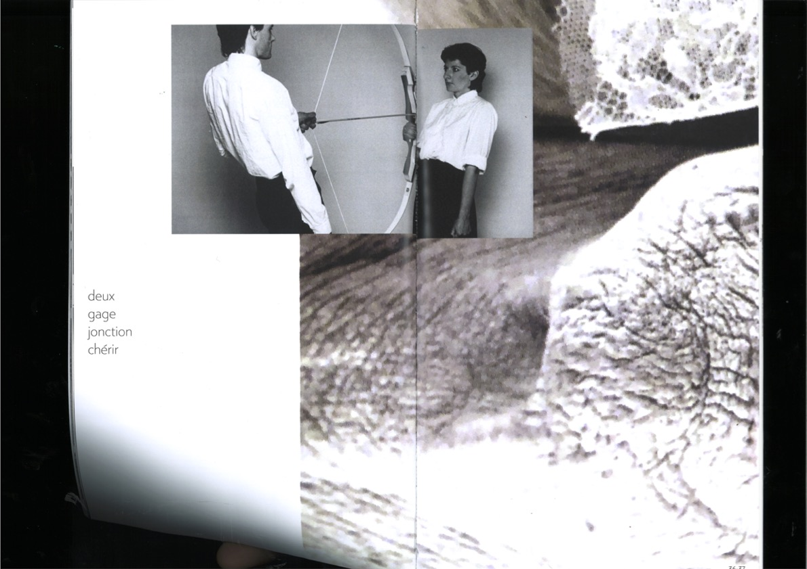
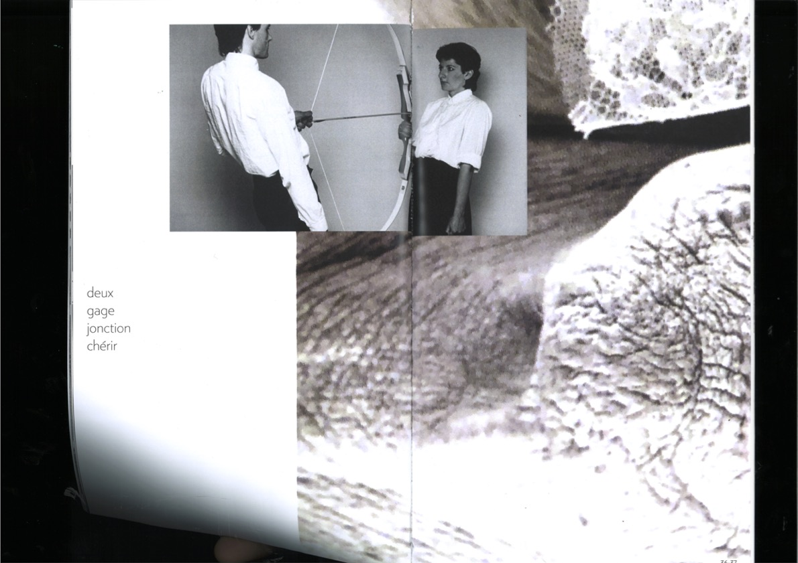

Comment s’approprier des images, les détourner plastiquement en ayant tout type d’intervention et les faire dialoguer avec un texte afin que le résultat final évoque une idée, porte un message ?
La démarche suivit lors de ce projet est purement expérimentale puisque le développement du sens de la composition s’est fait simultanément avec la mise en forme. Cela a donné naissance à des questionnements sur le processus de création et l’élaboration de principes graphiques.
« Déformer, déconstruire, étirer, plier, recadrer, superposer, démultiplier », tels sont les mots d’ordre appliqués aux images et au texte.
Toutes les compositions ont, dans un premier temps, été pensées à la main.
 


 

 
